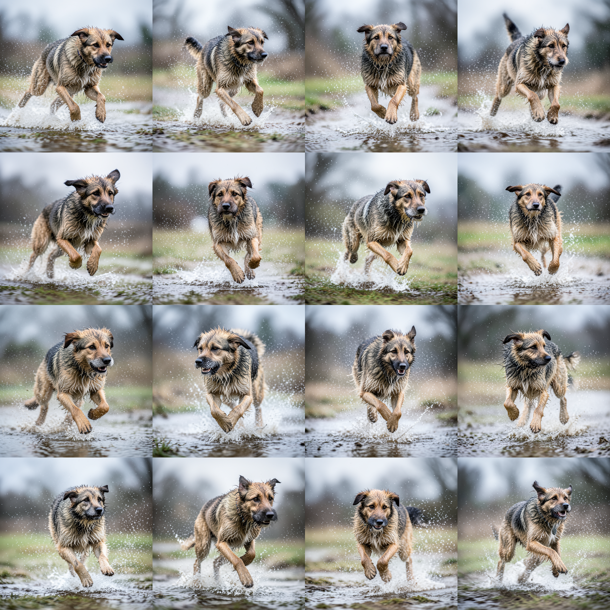
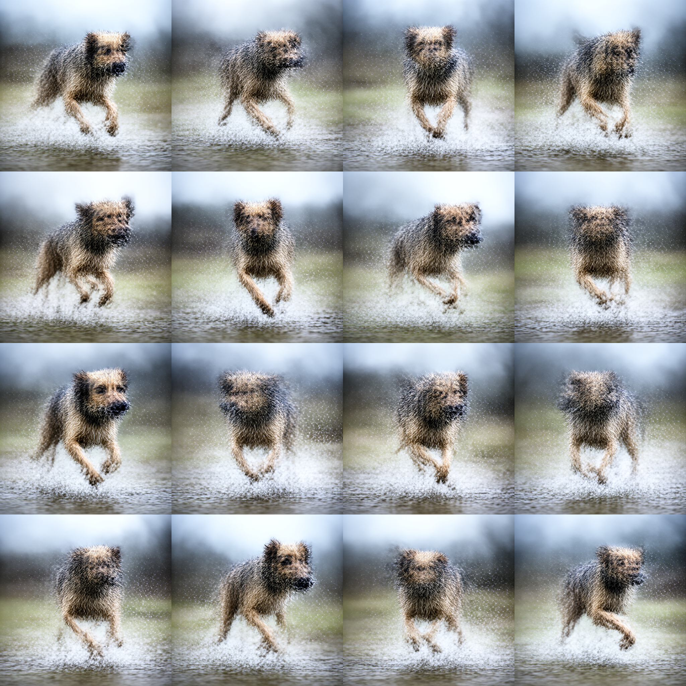
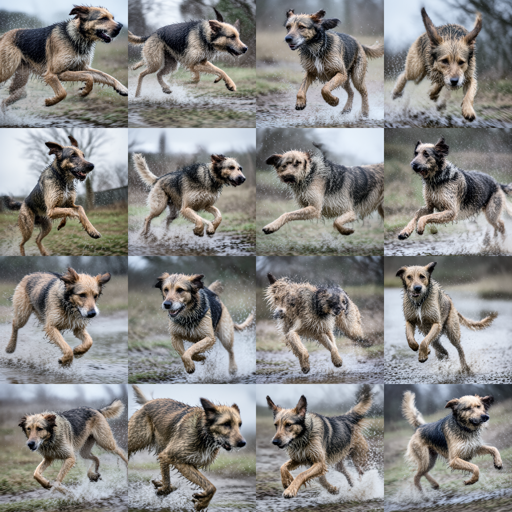
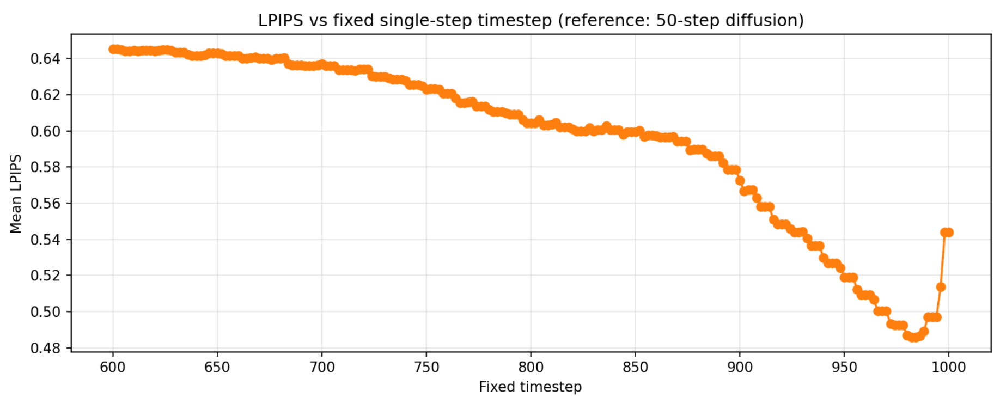
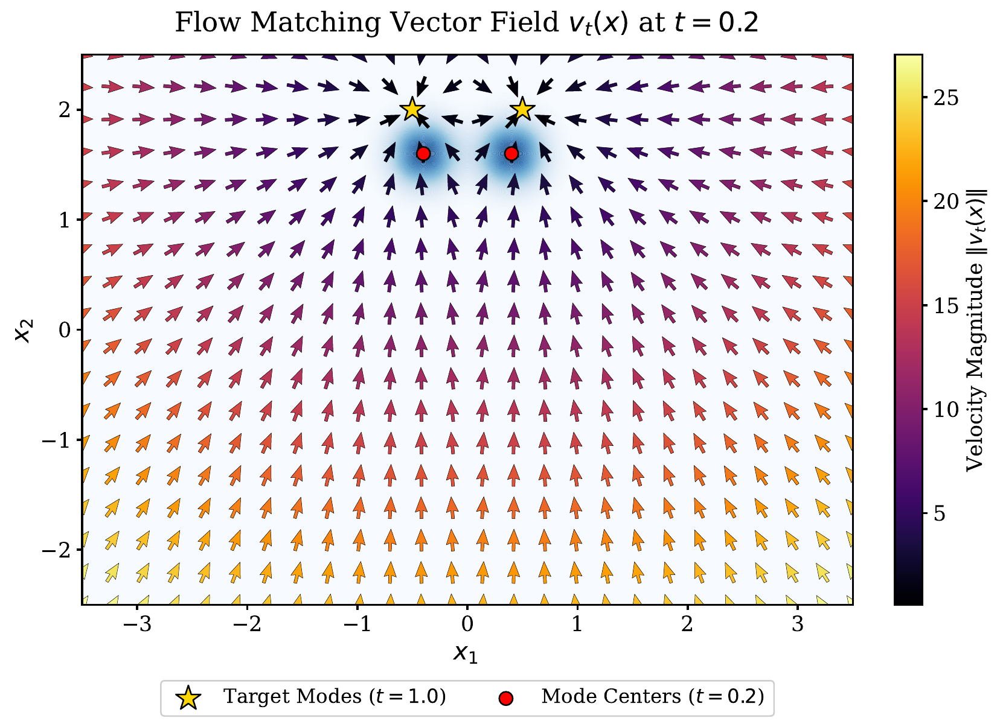
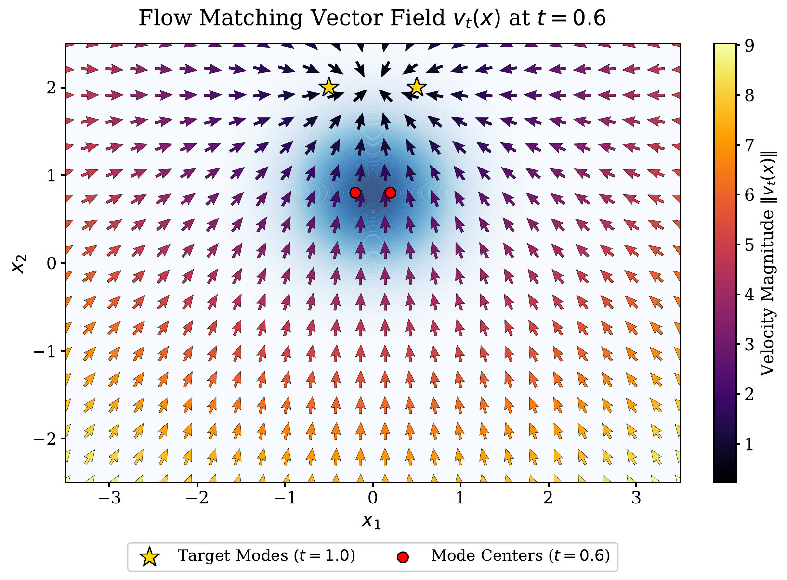
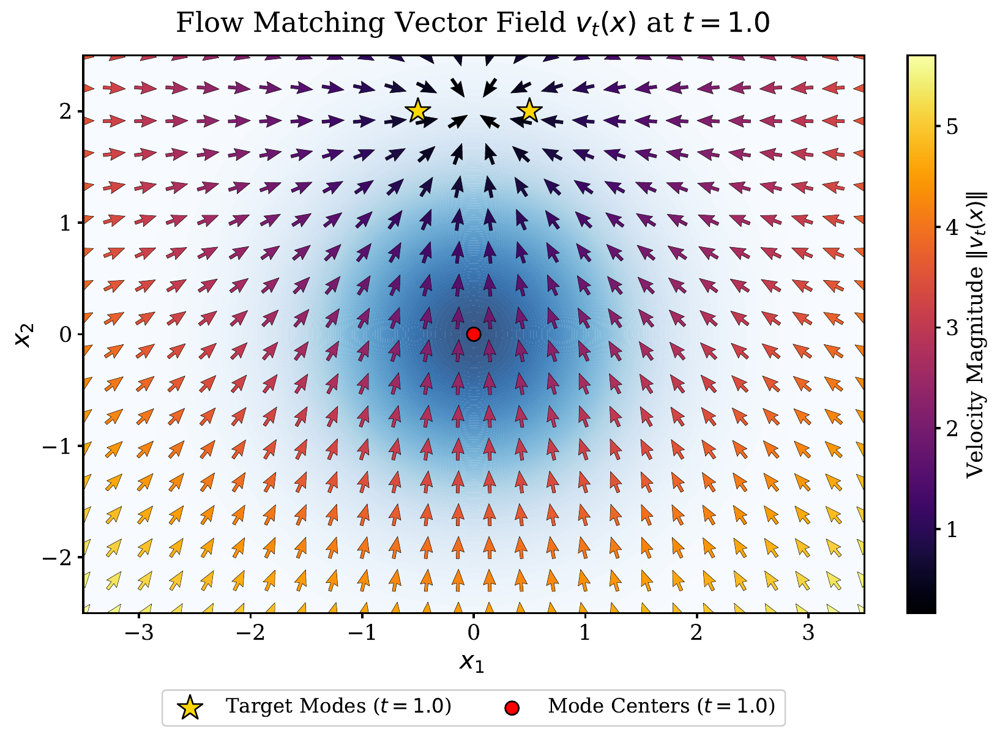

Abstract
We investigate whether single-step generation capability is inherent in pre-trained diffusion models. We identify that the primary weakness is the lack of high-frequency details (blurriness). We propose a training-free timestep adjustment method and demonstrate that fast distillation using perceptual loss can effectively mitigate blurriness with minimal computational cost.
Key Results



Main Finding
Lowering the initial timestep t₀ from 1.0 to ~0.96 introduces high-frequency details but also artifacts. This reveals a fundamental detail-artifact trade-off in single-step generation.

Method
Training-Free Adjustment
Simply lower the initial timestep t₀ to inject high-frequency details without training.
Theoretical Insight
High timesteps cause averaging (blurriness), while low timesteps suffer from distribution mismatch (artifacts).
LPIPS Distillation
Distill from 3 steps to 1 step using perceptual loss at t₀=0.975 for sharp results.



Citation
@article{du2026single_step,
title={Are pre-trained diffusion models inherently capable of single-step generation?},
author={Du, Guancheng and Li, Si},
year={2026}
}